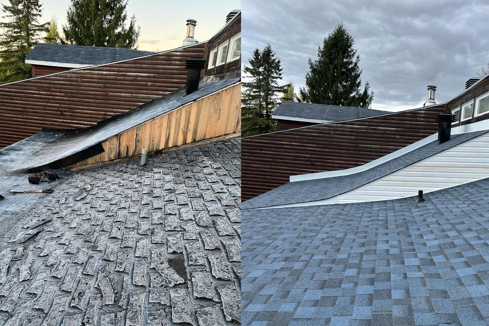
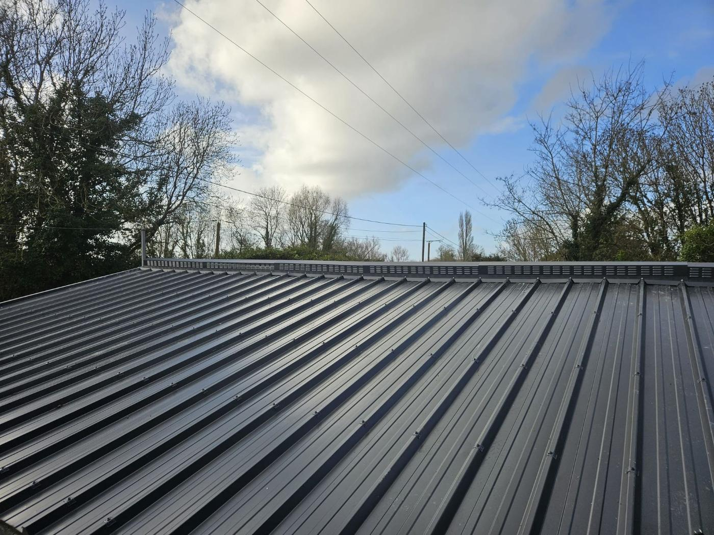
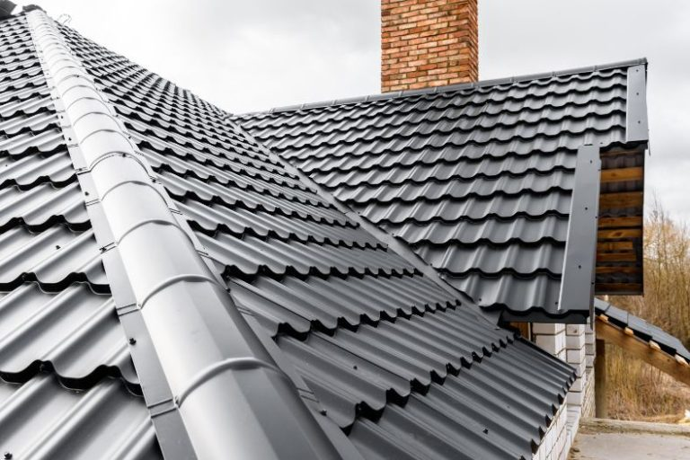
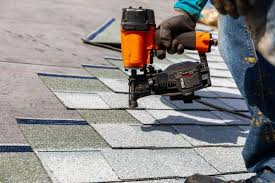
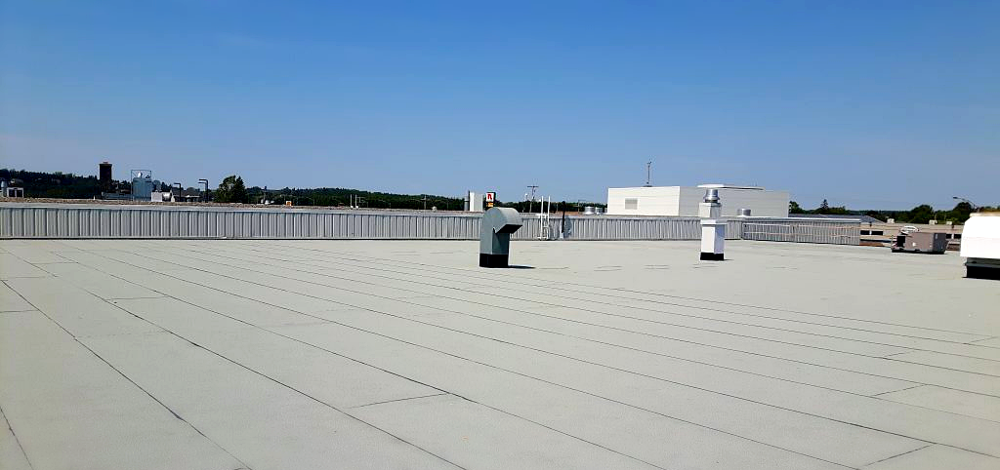
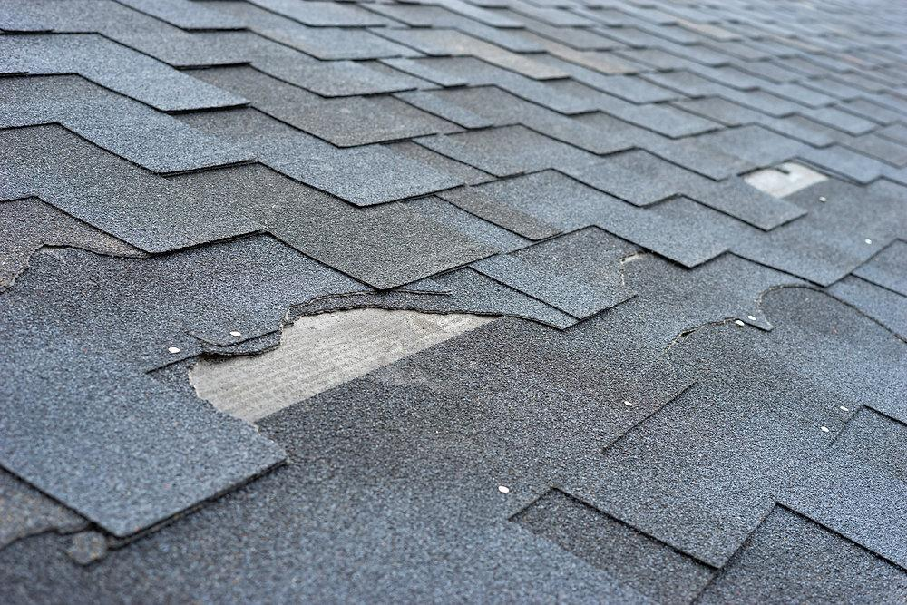
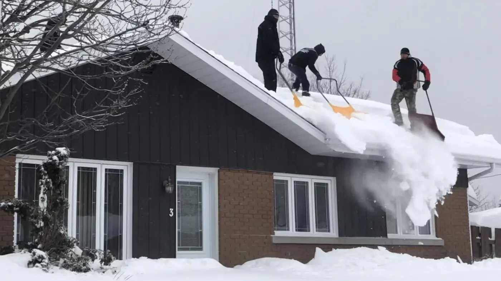

Portfolio
Réalisations de toiture
Aperçu de chantiers, réparations et installations réalisés sur la Rive-Sud.
Des photos concrètes aident à voir la qualité du travail : préparation, ventilation, membrane, bardeaux, finitions et entretien hivernal.
Chantier

Travaux de toiture résidentielleInspection, réparation ciblée et finition propre sur toiture résidentielle.
Acier

Toiture en acier profiléFinition durable pour le climat québécois.
Détail

Bardeaux et solinsDétail de finition sur toiture résidentielle.
Bardeaux

Pose de bardeauxInstallation et remplacement de sections usées.
Membrane

Membrane élastomèreÉtanchéité pour toiture plate et zones sensibles.
Réparation
Infiltration d'eauRepérage de fuite et correction ciblée.
Bardeaux

Remplacement de bardeauxCorrection des zones endommagées ou vieillissantes.
Déneigement

Déneigement résidentielPrévention des surcharges et barrages de glace.
Vous voulez un résultat propre et documenté ?
Demander une soumission
Envoyez quelques photos de votre toiture et on vous indique la prochaine étape.